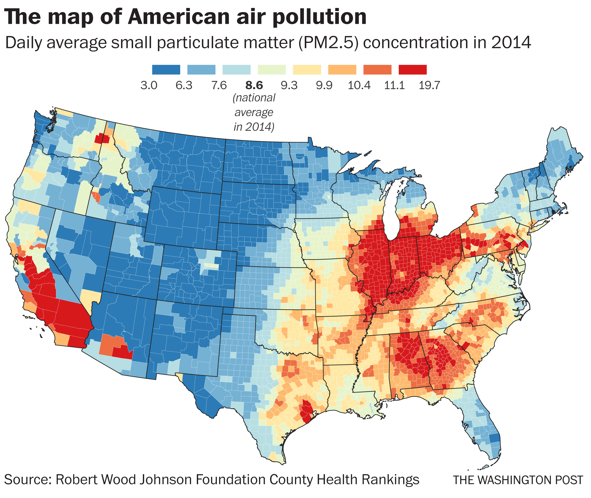

Air pollution occurs when harmful or excessive quantities of substance are released into the atmosphere.
These substances harm the environment, and harm the human bodies. Air pollution is basically a group of
substances that harm the environment in some way. These groups of substances can harm the ozone layer,
that protects humans from the direct heat of the sun, which can lead to cancer. In addition, air pollution
also is a huge part of global warming. It also causes humans to have headaches, dizziness, and nausea. Some
long-term effects include heart diseases, lung cancer, and respiratory diseases.
Pollutants are small particles in the atmosphere that have adverse effects on humans, animals, plants, and
our environment. Pollutants are basically the small particles that lead up to air pollution. They can be in
any of the three states of matter, solid, liquid, or gas. Pollutants can be classified in two different groups,
Primary, and Secondary.
Human activity has a huge role in the increase of air pollution. Here are some chemicals, that is released from
human activity, which increases air pollution:
Carbon Dioxide is the “leading pollutant”, or the pollutant that is in our atmosphere the most. In addition, it is
the most dangerous pollutant, as it harms the most. It is a greenhouse gas that is exhaled by humans, and it is
essential for plants. It is made of 1 carbon atom, and 2 oxygen atoms. We emitted billions of tons of CO2 annually by
burning fossil fuels.
Sulfur dioxide is another main pollutant that harms our environment. Sulfur dioxide is the chemical reaction of 1
sulfur atom, and 2 oxygen atoms. This pollutant is produced by volcanoes and many industrial processes. Coal and
petroleum’s combustion creates sulfur dioxide, as coal and petroleum contain sulfur. Sulfur dioxide is a dangerous
pollutant, harming our environment.
Nitrogen dioxide is a chemical reaction of one nitrogen atom, and 2 oxygen atoms. It is expelled from the high
temperature combustion, which happens during a thunderstorm or electric discharge. It is a toxic gas that has a
sharp, biting odor. It’s color is reddish-brown, and it is one of the most common and harmful pollutants.
This chemical reaction is made from one carbon and one oxygen atom. It is odorless, colorless, and it is a toxic gas.
It is the combustion of natural gas, coal, and wood. Vehicular exhaust contributes to the majority of the CO produced.
It creates a smog like formation and is dangerous to life and the atmosphere.
Here is an image of how much air pollution was released each state in the US, daily, in 2014 year.
